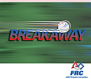

2012

The Rebound RumbleSM robotics game is played between two Alliances of three teams each. Each Alliance competes
by trying to as many of the basketballs in the hoops as possible during the 2-minute and 15-second match.
Balls scored in higher hoops score Alliances more points. Alliances are awarded bonus points if they are balanced
on bridges at the end of the match. In matches where opponent Alliances work together to balance on the white
bridge, all participating teams earn additional valuable seeding points.
Meet Mark León, the blue-hair MC!!
2011
LOGO MOTIONSM is played by two competing alliances on a flat 27' x 54' foot field. Each alliance consists of three robots. They compete to hang as many inflated plastic shapes (triangles, circles, and squares) on their grids as they can during a 2 minute and 15 second match. The higher the teams hang their game pieces on their scoring grid, the more points their alliance receives.
The match begins with one 15-second Autonomous Period in which robots operate independently of driver inputs and must hang Ubertubes to score extra points. For the rest of the match, drivers control robots and try to maximize their alliance score by hanging as many logo pieces as possible. Any logo piece hung on the same peg as an Ubertube receives double points. If teams assemble the logo pieces on their scoring grids to form the FIRST® logo (triangle, circle, square, in a horizontal row in that order), the points for the entire row are doubled.
The match ends with robots deploying minibots, small electro-mechanical assemblies that are independent of the host robot, onto vertical poles. The minibots race to the top of the pole to trigger a sensor and earn additional bonus points.
2010

BreakawaySM is played with two alliances of three teams each competing on a 27' x 54' field with bumps attempting to earn points by collecting soccer balls in their goals.
Additional bonus points are earned for each robot not touching the field at the end of the match.
Above all, remember how we got here...
|
Go FIRST!!!
|